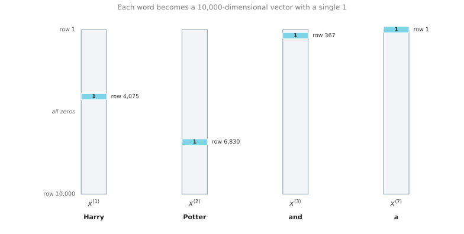
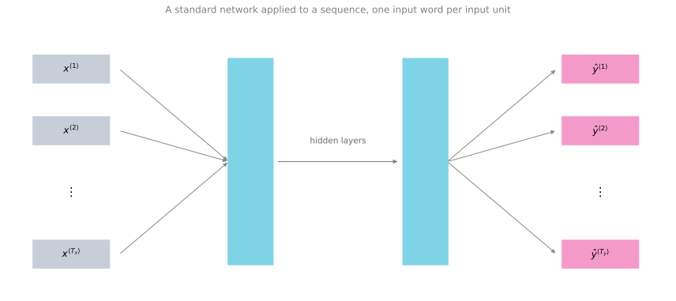
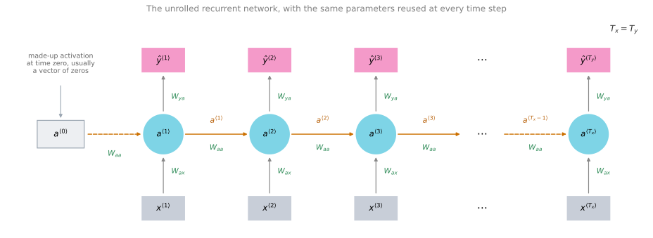
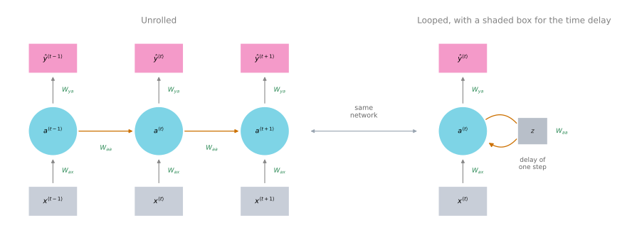
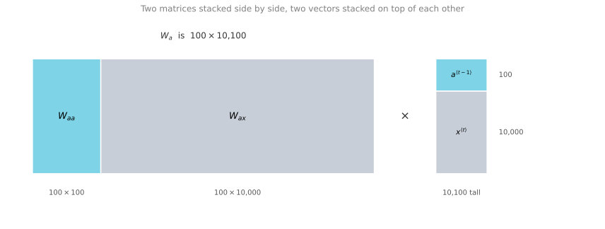
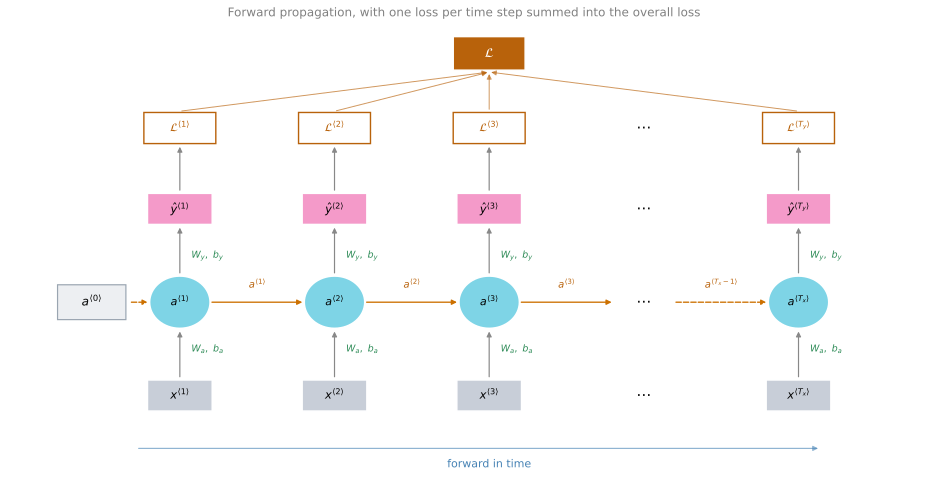
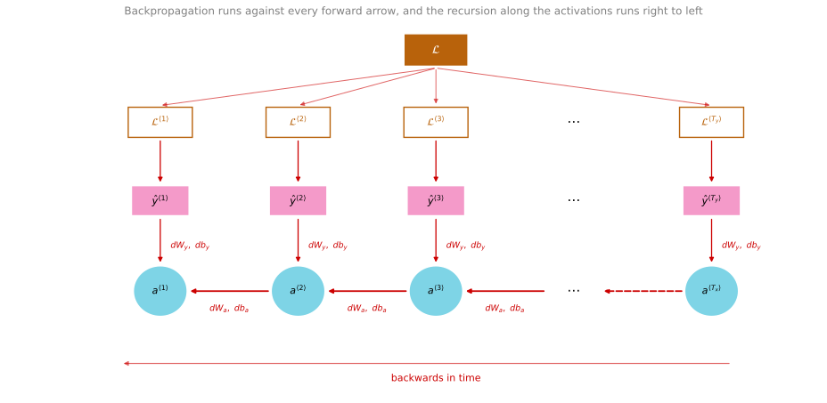

Recurrent Neural Networks
deep-learning
sequence-models
rnn
nlp
notation
forward-propagation
backpropagation
Sequence problems and their notation, why a standard network fails on them, and how a recurrent neural network runs forward and backward through time.
This fifth and final course of the specialization covers sequence models, one of the most exciting areas in deep learning. Models such as recurrent neural networks, or RNNs, have transformed speech recognition, natural language processing, and other areas, and this course builds them up from scratch.
A good place to start is with a few examples of where sequence models are useful.
Sequence Data Examples
In speech recognition you are given an input audio clip \(X\) and asked to map it to a text transcript \(Y\). Both the input and the output here are sequence data, because \(X\) is an audio clip that plays out over time and \(Y\) is a sequence of words. Sequence models such as recurrent neural networks, and the variations covered later, have been very useful for speech recognition.
Music generation is another problem with sequence data. In this case only the output \(Y\) is a sequence. The input can be the empty set, or it can be a single integer, maybe referring to the genre of music you want to generate, or maybe the first few notes of the piece you want. So \(X\) can be nothing or just an integer, while the output \(Y\) is a sequence.
In sentiment classification the input \(X\) is a sequence. Given a phrase such as “There is nothing to like in this movie”, how many stars do you think the review will be?
Sequence models are also very useful for DNA sequence analysis. Your DNA is represented by the four letters A, C, G, and T, and given a DNA sequence you might ask which part of it corresponds to a protein.
In machine translation you are given an input sentence, “Voulez-vous chanter avec moi?”, and asked to output the translation in a different language.
In video activity recognition you might be given a sequence of video frames and asked to recognize the activity taking place.
And in named entity recognition you might be given a sentence and asked to identify the people mentioned in it.
| Application | Input \(X\) | Output \(Y\) |
|---|---|---|
| Speech recognition | Audio clip (sequence) | Text transcript (sequence) |
| Music generation | Nothing, or a single integer | Sequence of notes (sequence) |
| Sentiment classification | Review text (sequence) | Star rating |
| DNA sequence analysis | DNA sequence (sequence) | Labels marking protein regions (sequence) |
| Machine translation | Sentence in one language (sequence) | Sentence in another language (sequence) |
| Video activity recognition | Video frames (sequence) | Activity label |
| Named entity recognition | Sentence (sequence) | Labels marking names (sequence) |
All of these problems can be addressed as supervised learning with labeled data \(X\) and \(Y\) as the training set. But as the list shows, there are a lot of different types of sequence problems. In some of them both the input \(X\) and the output \(Y\) are sequences, and in that case \(X\) and \(Y\) can have different lengths, as in machine translation, or the same length, as in named entity recognition. In others only \(X\) or only \(Y\) is a sequence. Sequence models apply to all of these settings.
Review Questions
1. In music generation, which side of the problem is sequence data, and what can the input be?
Answer
Only the output \(Y\) is a sequence, because the model produces a sequence of notes. The input \(X\) can be the empty set, or a single integer standing for the genre of music you want, or the first few notes of the piece you want.
1. Give an example from the list where \(X\) and \(Y\) are both sequences but do not have to be the same length, and one where they do have the same length.
Answer
Machine translation has both sides as sequences with different lengths, because a sentence and its translation need not contain the same number of words. Named entity recognition has both sides as sequences of the same length, because the model produces one output per input word.
1. Sentiment classification reads “There is nothing to like in this movie” and predicts a star rating. Which of the following describes this problem?
Only the input \(X\) is a sequence
Only the output \(Y\) is a sequence
Both \(X\) and \(Y\) are sequences of the same length
Neither \(X\) nor \(Y\) is a sequence
Answer
a. The input is a phrase, which is sequence data, while the output is a single number of stars. Option b describes music generation, option c describes named entity recognition, and option d would not be a sequence problem at all.
Notation
A good motivating example is named entity recognition. Suppose you want to build a sequence model that takes a sentence such as “Harry Potter and Hermione Granger invented a new spell” and automatically tells you where the people’s names are. Harry Potter and Hermione Granger are characters from the Harry Potter novels by J. K. Rowling.
Named entity recognition is used by search engines, for example, to index all of the people mentioned in the last 24 hours of news articles so that those articles can be looked up appropriately. The same systems are used to find company names, times, locations, country names, and currency names in many different types of text.
Given the input \(x\), you want the model to output a \(y\) that has one output per input word. The target output tells you, for each of the input words, whether it is part of a person’s name.
Technically this may not be the best output representation. There are more sophisticated representations that tell you not just whether a word is part of a person’s name, but where the names start and end, so that you know Harry Potter starts here and ends here, and Hermione Granger starts here and ends here. For this motivating example the simpler output representation is enough.
The input is a sequence of nine words, so there will eventually be nine sets of features to represent those nine words. To index into the positions in the sequence, write \(x^{\langle 1 \rangle}\), \(x^{\langle 2 \rangle}\), \(x^{\langle 3 \rangle}\), and so on up to \(x^{\langle 9 \rangle}\). A position somewhere in the middle of the sequence is written \(x^{\langle t \rangle}\). The letter \(t\) hints that these are temporal sequences, and the same index \(t\) is used whether the sequence is temporal or not. The outputs are indexed the same way, from \(y^{\langle 1 \rangle}\) up to \(y^{\langle 9 \rangle}\).
Two more symbols record how long the sequences are. \(T_x\) denotes the length of the input sequence, so in this case there are nine words and \(T_x = 9\), and \(T_y\) denotes the length of the output sequence. In this example \(T_x = T_y\), but as the previous section showed, \(T_x\) and \(T_y\) can be different.
Earlier courses used \(x^{(i)}\) to denote the \(i\)-th training example. Putting the two pieces together, \(x^{(i)\langle t \rangle}\) refers to element \(t\) in the input sequence of training example \(i\). Different examples in your training set can have different lengths, so \(T_x^{(i)}\) is the input sequence length for training example \(i\). In the same way, \(y^{(i)\langle t \rangle}\) is element \(t\) in the output sequence of example \(i\), and \(T_y^{(i)}\) is the length of that output sequence. For the nine-word sentence above, \(T_x^{(i)} = 9\), while a different training example holding a sentence of fifteen words would have \(T_x^{(i)} = 15\).
| Symbol | Meaning |
|---|---|
| \(x^{\langle t \rangle}\) | Element \(t\) of the input sequence |
| \(y^{\langle t \rangle}\) | Element \(t\) of the output sequence |
| \(T_x\) | Length of the input sequence |
| \(T_y\) | Length of the output sequence |
| \(x^{(i)\langle t \rangle}\) | Element \(t\) of the input sequence of training example \(i\) |
| \(y^{(i)\langle t \rangle}\) | Element \(t\) of the output sequence of training example \(i\) |
| \(T_x^{(i)}\) | Input sequence length of training example \(i\) |
| \(T_y^{(i)}\) | Output sequence length of training example \(i\) |
Review Questions
1. For the sentence “Harry Potter and Hermione Granger invented a new spell”, what are \(T_x\) and \(T_y\), and does that equality hold for every sequence problem?
Answer
The sentence has nine words and the model produces one label per word, so \(T_x = 9\) and \(T_y = 9\). The equality does not hold in general. In machine translation the translated sentence can be longer or shorter than the original, and in sentiment classification the output is a single rating rather than a sequence.
1. What does \(x^{(2)\langle 3 \rangle}\) mean, and how is it different from \(x^{(3)\langle 2 \rangle}\)?
Answer
The round-bracket superscript indexes the training example and the angle-bracket superscript indexes the position inside that example’s sequence. So \(x^{(2)\langle 3 \rangle}\) is the third word of the second training example, while \(x^{(3)\langle 2 \rangle}\) is the second word of the third training example. They point at different words in different sentences.
1. Why does the notation need \(T_x^{(i)}\) rather than a single \(T_x\) for the whole training set?
Answer
Because different training examples can have different lengths. One sentence in the training set may hold nine words and another may hold fifteen, so the length has to be recorded per example.
1. Your training examples are sentences. Which expression refers to the \(l\)-th word of the \(k\)-th training example?
\(x^{\langle k \rangle (l)}\)
\(x^{(k)\langle l \rangle}\)
\(x^{(l)\langle k \rangle}\)
\(x^{\langle l \rangle (k)}\)
Answer
b. The round brackets index the training example and the angle brackets index the position inside that example’s sequence, and the example index is written first. So \(x^{(k)\langle l \rangle}\) selects training example \(k\), then word \(l\) within it. Options a and d put the two brackets in the wrong order, and option c swaps the roles of \(k\) and \(l\).
Representing Words
This is the first serious step into natural language processing, so the next question is how to represent an individual word in a sentence.
To represent a word, the first thing to do is come up with a vocabulary, sometimes also called a dictionary. That means making a list of the words that you will use in your representations. The first word in the vocabulary is a, the second is Aaron, a little further down is the word and, then eventually Harry, then Potter, and all the way down to maybe the last word Zulu.
| Position | Word |
|---|---|
| 1 | a |
| 2 | Aaron |
| … | … |
| 367 | and |
| … | … |
| 4,075 | Harry |
| … | … |
| 6,830 | Potter |
| … | … |
| 10,000 | Zulu |
So a is word one, Aaron is word two, and sits at position 367, Harry at 4,075, Potter at 6,830, and Zulu is the last word at 10,000. This example uses a dictionary of size 10,000 words, which is quite small by modern NLP standards. For commercial applications, dictionary sizes of 30,000 to 50,000 are more common and 100,000 is not uncommon, while some of the large internet companies use dictionary sizes of a million words or even bigger. A round 10,000 is convenient for illustration.
One way to build this dictionary is to look through your training set and find the top 10,000 occurring words. Another is to look through online dictionaries that tell you the most common 10,000 words in the English language.
Once the dictionary exists, you can use one-hot representations to represent each of these words. For example, \(x^{\langle 1 \rangle}\), which represents the word Harry, is a vector of all zeros except for a 1 in position 4,075, because that is the position of Harry in the dictionary. Then \(x^{\langle 2 \rangle}\) is again a vector of all zeros except for a 1 in position 6,830 for Potter. The word and sits at position 367, so \(x^{\langle 3 \rangle}\) is a vector with a 1 in position 367 and zeros everywhere else. The seventh word of the sentence is a, which is the very first entry of the dictionary, so \(x^{\langle 7 \rangle}\) has a 1 in position 1 and zeros everywhere else. Each of these is a 10,000-dimensional vector, because the vocabulary has 10,000 words.

In this representation, \(x^{\langle t \rangle}\) for each value of \(t\) in a sentence is a one-hot vector. It is called one-hot because exactly one entry is on and every other entry is zero, and there are nine of them to represent the nine words in this sentence. The goal is to take this representation of \(X\) and learn a mapping, using a sequence model, to the target output \(y\). This is done as a supervised learning problem, trained on labeled data with both \(x\) and \(y\) given.
Unknown Words
One last detail, which comes back in a later video, is what happens when you encounter a word that is not in your vocabulary. The answer is that you create a new token, a new fake word called Unknown Word, written \(\langle \text{UNK} \rangle\), to stand for every word that is not in your vocabulary.
Review Questions
1. The sentence is “Harry Potter and Hermione Granger invented a new spell” and the vocabulary has 10,000 words. What does \(x^{\langle 7 \rangle}\) look like?
Answer
The seventh word is a, which is the first entry in the dictionary. So \(x^{\langle 7 \rangle}\) is a 10,000-dimensional vector holding a 1 in position 1 and a 0 in every other position.
1. Two ways of building a 10,000-word vocabulary were mentioned. What are they?
Answer
You can look through your own training set and take the 10,000 most frequently occurring words, or you can look through an online dictionary that lists the most common 10,000 words in the English language.
1. A word appears in a test sentence but was never added to the vocabulary. How is it represented?
It is dropped from the sentence
It is mapped to the special token \(\langle \text{UNK} \rangle\)
It is given a vector of all zeros
The vocabulary is grown by one entry
Answer
b. A new fake word called Unknown Word, written \(\langle \text{UNK} \rangle\), stands in for every word that is not in the vocabulary. Dropping the word would change the length of the sequence, an all-zero vector would not be a one-hot vector, and growing the vocabulary would change the dimension of every input vector.
1. Why is a one-hot vector for this example 10,000 numbers long rather than nine?
Answer
The length of a one-hot vector is set by the size of the vocabulary, not by the length of the sentence. The vocabulary holds 10,000 words, so each vector needs 10,000 slots in order to mark which one of those words it is. The sentence length of nine only decides how many such vectors you need, which is one per word.
With this notation in place, the next step is to build a model that learns the mapping from \(X\) to \(Y\).
Why Not a Standard Network?
One thing you could try is a standard neural network. In the named entity recognition example there were nine input words, so you could imagine taking those nine words, maybe the nine one-hot vectors, and feeding them into a standard network with a few hidden layers, which eventually outputs the nine values, zero or one, that tell you whether each word is part of a person’s name.

This turns out not to work well, and there are two main problems.
Inputs and outputs can be different lengths in different examples. It is not as though every example has the same input length \(T_x\) or the same output length \(T_y\). If every sentence has some maximum length, you could pad or zero-pad every input up to that maximum length, but this still does not seem like a good representation.
A naive architecture does not share features learned across different positions of text. Suppose the network has learned that the word Harry appearing in position one is a sign that it is part of a person’s name. It would be nice if it automatically figured out that Harry appearing in some other position \(x^{\langle t \rangle}\) also means the word might be a person’s name. This is similar to what happens in convolutional neural networks, where things learned for one part of an image generalize quickly to other parts of the image, and a similar effect is wanted for sequence data.
A better representation also reduces the number of parameters in the model. Each input is a 10,000-dimensional one-hot vector, so the total input size is the maximum number of words times 10,000, which makes for a very large input layer. The weight matrix of that first layer ends up having an enormous number of parameters.
A recurrent neural network does not have either of these disadvantages.
Review Questions
1. Why is zero-padding every sentence up to a maximum length not a satisfying fix for the first problem?
Answer
It makes the shapes line up, but it is still not a good representation. Every example is forced into the same fixed-width input regardless of how long it actually is, and the padding carries no information while still consuming input units and parameters.
1. What does “sharing features across positions” mean, and which earlier architecture already does something similar?
Answer
It means that something the network learns about a word at one position should apply automatically when that word shows up at a different position. If Harry at position one signals a person’s name, then Harry at position five should too, without the network having to learn it separately. Convolutional networks do the analogous thing for images, where a feature learned for one part of an image generalizes to other parts.
1. With a 10,000-word vocabulary and a maximum sentence length of 100 words, roughly how large is the input layer of the standard network above?
10,000 units
100 units
1,000,000 units
10,100 units
Answer
c. Each word is a 10,000-dimensional one-hot vector and there are up to 100 of them, so the input is \(100 \times 10{,}000 = 1{,}000{,}000\) units. The first weight matrix therefore has an enormous number of parameters, which is the third reason to want a better representation.
Recurrent Neural Network Structure
Suppose you read the sentence from left to right. The first word you read is \(x^{\langle 1 \rangle}\), and what you do is take that first word and feed it into a neural network layer. There is a hidden layer, and you can have the network try to predict the output \(\hat{y}^{\langle 1 \rangle}\), which says whether this is part of a person’s name or not.
What a recurrent neural network does is this. When it goes on to read the second word in the sentence, \(x^{\langle 2 \rangle}\), instead of predicting \(\hat{y}^{\langle 2 \rangle}\) using only \(x^{\langle 2 \rangle}\), it also gets some information from what was computed at time step one. In particular, the activation value from time step one is passed on to time step two. At the next time step the network takes the third word \(x^{\langle 3 \rangle}\) and tries to output a prediction \(\hat{y}^{\langle 3 \rangle}\), and so on up to the last time step, where it takes \(x^{\langle T_x \rangle}\) together with the activation \(a^{\langle T_x - 1 \rangle}\) carried over from the step before it, and outputs \(\hat{y}^{\langle T_y \rangle}\). In this example \(T_x = T_y\), and the architecture changes a bit when \(T_x\) and \(T_y\) are not identical.
To kick the whole thing off you also need a made-up activation at time zero, \(a^{\langle 0 \rangle}\). This is usually a vector of zeros. Some researchers initialize \(a^{\langle 0 \rangle}\) randomly, and there are other ways to initialize it, but a vector of zeros as the fake time-zero activation is the most common choice.

Two Ways to Draw the Same Network
In some research papers and some books you see this type of network drawn with a different diagram, in which at every time step you input \(x\) and output \(\hat{y}\), sometimes with a \(t\) index. To denote the recurrent connection, people draw a loop that feeds the layer back into the cell, and sometimes a shaded box to denote a time delay of one step.

The recurrent diagrams on the right are harder to interpret, so these notes draw the unrolled diagram on the left throughout. If you see something like the diagram on the right in a textbook or a research paper, the way to think about it is to mentally unroll it into the diagram on the left.
One Weakness of This Architecture
This RNN only uses the information that is earlier in the sequence to make a prediction. When predicting \(\hat{y}^{\langle 3 \rangle}\) it does not use information about the words \(x^{\langle 4 \rangle}\), \(x^{\langle 5 \rangle}\), \(x^{\langle 6 \rangle}\), and so on.
This is a problem. Consider the sentence “He said, Teddy Roosevelt was a great president.” To decide whether the word Teddy is part of a person’s name, it would be really useful to know not just the first two words but the later words as well, because the sentence could also have been “He said, teddy bears are on sale.” Given only the first three words it is not possible to know for sure whether Teddy is part of a person’s name. In the first example it is, and in the second example it is not, and you cannot tell the difference by looking only at the first three words.
So one limitation of this particular structure is that the prediction at a certain time uses information from the inputs earlier in the sequence but not information later in the sequence. This is addressed later by bidirectional recurrent neural networks, or BRNNs. For now this simpler unidirectional architecture is enough to explain the key concepts.
Review Questions
1. What is \(a^{\langle 0 \rangle}\) and what is it normally set to?
Answer
It is a made-up activation at time zero, needed to kick off the recurrence, because the first cell expects an incoming activation from the step before it. It is usually a vector of zeros. Some researchers initialize it randomly, but zeros is the most common choice.
1. The network predicts \(\hat{y}^{\langle 3 \rangle}\). Which inputs does that prediction actually depend on?
Answer
It depends on \(x^{\langle 1 \rangle}\), \(x^{\langle 2 \rangle}\), and \(x^{\langle 3 \rangle}\). The information from the earlier words reaches time step three through the horizontal activation connections. It does not depend on \(x^{\langle 4 \rangle}\) or anything later, which is the weakness that bidirectional RNNs later fix.
1. Why do the sentences “He said, Teddy Roosevelt was a great president” and “He said, teddy bears are on sale” make the same point about this architecture?
Answer
Both begin with the same three words, and in one of them Teddy is part of a person’s name while in the other it is not. A unidirectional RNN predicting at position three has seen only those three words, so it has no way to tell the two cases apart. The information that settles it comes later in the sentence.
1. How does parameter sharing across time steps address the second problem with the standard network?
Answer
The same \(W_{ax}\), \(W_{aa}\), and \(W_{ya}\) are used at every position, so whatever the network learns about a word is applied at every position it can appear in. It also keeps the parameter count from growing with the length of the sequence, because a longer sentence reuses the same matrices rather than needing new ones.
Forward Propagation
Here is what forward propagation looks like written out. You start with \(a^{\langle 0 \rangle}\) equal to the vector of all zeros. To compute \(a^{\langle 1 \rangle}\) you apply an activation function \(g\) to \(W_{aa}\) times \(a^{\langle 0 \rangle}\), plus \(W_{ax}\) times \(x^{\langle 1 \rangle}\), plus a bias \(b_a\). Then the prediction at time one uses some activation function, possibly a different one, applied to \(W_{ya}\) times \(a^{\langle 1 \rangle}\) plus \(b_y\).
\[a^{\langle 1 \rangle} = g\!\left(W_{aa}\,a^{\langle 0 \rangle} + W_{ax}\,x^{\langle 1 \rangle} + b_a\right)\]
\[\hat{y}^{\langle 1 \rangle} = g\!\left(W_{ya}\,a^{\langle 1 \rangle} + b_y\right)\]
The notation convention for the subscripts on these matrices works like this. In \(W_{ax}\), the second index \(x\) means that this matrix is going to be multiplied by some \(x\)-like quantity, and the first index \(a\) means that it is used to compute some \(a\)-like quantity. Similarly, \(W_{ya}\) is multiplied by an \(a\)-like quantity to compute a \(y\)-like quantity.
The activation function used to compute the activations is often a tanh in the case of an RNN, and ReLU is sometimes used as well, although tanh is a pretty common choice. There are other ways of preventing the vanishing gradient problem, which come up later this week.
The choice of the output activation function depends on what type of output \(y\) you have. If it is a binary classification problem you would use a sigmoid, and if you have a \(k\)-way classification problem it could be a softmax. For the named entity recognition task, where \(y\) was either 0 or 1, the second \(g\) would be a sigmoid. You could write \(g_2\) to distinguish the two activation functions, though that is usually left implicit.
More generally, at time \(t\):
\[a^{\langle t \rangle} = g\!\left(W_{aa}\,a^{\langle t-1 \rangle} + W_{ax}\,x^{\langle t \rangle} + b_a\right)\]
\[\hat{y}^{\langle t \rangle} = g\!\left(W_{ya}\,a^{\langle t \rangle} + b_y\right)\]
These equations define forward propagation. You start with \(a^{\langle 0 \rangle}\) as the vector of all zeros, then use \(a^{\langle 0 \rangle}\) and \(x^{\langle 1 \rangle}\) to compute \(a^{\langle 1 \rangle}\) and \(\hat{y}^{\langle 1 \rangle}\), then take \(x^{\langle 2 \rangle}\) and use it with \(a^{\langle 1 \rangle}\) to compute \(a^{\langle 2 \rangle}\) and \(\hat{y}^{\langle 2 \rangle}\), and so on, carrying out forward propagation from the left to the right of the diagram.
Review Questions
1. In the symbol \(W_{ya}\), what does each of the two subscript letters tell you?
Answer
The second letter says what the matrix gets multiplied by and the first says what it helps compute. So \(W_{ya}\) is multiplied by an \(a\)-like quantity, the activation, and is used to produce a \(y\)-like quantity, the prediction. The same reading applies to \(W_{ax}\), which multiplies an \(x\)-like quantity to help compute an \(a\)-like quantity.
1. Which activation function is the common choice inside the recurrence, and what decides the activation function on the output?
Answer
Tanh is the common choice for computing the activations, and ReLU is sometimes used. The output activation is decided by the type of \(y\). A binary classification problem uses a sigmoid, and a \(k\)-way classification problem uses a softmax. Named entity recognition has \(y\) equal to 0 or 1, so it uses a sigmoid.
1. Write the two forward propagation equations at a general time step \(t\).
Answer
\[a^{\langle t \rangle} = g\!\left(W_{aa}\,a^{\langle t-1 \rangle} + W_{ax}\,x^{\langle t \rangle} + b_a\right)\] \[\hat{y}^{\langle t \rangle} = g\!\left(W_{ya}\,a^{\langle t \rangle} + b_y\right)\] The activation at time \(t\) combines the activation carried over from time \(t-1\) with the input at time \(t\), and the prediction at time \(t\) is computed from that activation.
Simplified Notation
To help in developing more complex networks later, the notation can be simplified a little. The activation equation gets rewritten as
\[a^{\langle t \rangle} = g\!\left(W_a\,[\,a^{\langle t-1 \rangle},\, x^{\langle t \rangle}\,] + b_a\right)\]
and the quantities on the left and right are meant to be equivalent to what was written before. The way \(W_a\) is defined is by taking the matrix \(W_{aa}\) and the matrix \(W_{ax}\) and putting them side by side, stacking them horizontally.
For example, if \(a\) is 100-dimensional and, in the running example, \(x\) is 10,000-dimensional, then \(W_{aa}\) is a \(100 \times 100\) matrix and \(W_{ax}\) is a \(100 \times 10{,}000\) matrix. Stacking those two together gives a \(W_a\) that is \(100 \times 10{,}100\). The notation \([\,a^{\langle t-1 \rangle}, x^{\langle t \rangle}\,]\) means taking the two vectors and stacking them together, so the 100-dimensional \(a^{\langle t-1 \rangle}\) sits on top of the 10,000-dimensional \(x^{\langle t \rangle}\) and the result is a 10,100-dimensional vector.

You can check for yourself that this matrix times this vector gives back the original quantity. The stacked matrix \([\,W_{aa} \mid W_{ax}\,]\) multiplied by the stacked vector \([\,a^{\langle t-1 \rangle},\, x^{\langle t \rangle}\,]\) is equal to \(W_{aa}\,a^{\langle t-1 \rangle} + W_{ax}\,x^{\langle t \rangle}\), which is exactly what was there before.
The advantage of this notation is that rather than carrying around two parameter matrices, \(W_{aa}\) and \(W_{ax}\), you compress them into a single parameter matrix \(W_a\), which simplifies the notation when developing more complex models. The output equation gets rewritten in a similar way.
\[\hat{y}^{\langle t \rangle} = g\!\left(W_y\,a^{\langle t \rangle} + b_y\right)\]
Now there is just one subscript in \(W_y\) and \(b_y\), and it denotes what type of output quantity is being computed. So \(W_y\) indicates a weight matrix for computing a \(y\)-like quantity, and \(W_a\) and \(b_a\) indicate the parameters for computing an \(a\)-like activation quantity.
Review Questions
1. \(a\) is 100-dimensional and \(x\) is 10,000-dimensional. What are the shapes of \(W_a\) and of the stacked vector \([\,a^{\langle t-1 \rangle}, x^{\langle t \rangle}\,]\)?
Answer
\(W_{aa}\) is \(100 \times 100\) and \(W_{ax}\) is \(100 \times 10{,}000\), so placing them side by side gives a \(W_a\) of shape \(100 \times 10{,}100\). Stacking the 100-dimensional activation on top of the 10,000-dimensional input gives a vector of length 10,100. Multiplying the two gives a 100-dimensional result, which is the right shape for \(a^{\langle t \rangle}\).
1. Show why \(W_a\,[\,a^{\langle t-1 \rangle}, x^{\langle t \rangle}\,]\) is the same as \(W_{aa}\,a^{\langle t-1 \rangle} + W_{ax}\,x^{\langle t \rangle}\).
Answer
Multiplying a horizontally stacked matrix by a vertically stacked vector splits into the sum of the two blockwise products. \[[\,W_{aa} \mid W_{ax}\,] \begin{bmatrix} a^{\langle t-1 \rangle} \\ x^{\langle t \rangle} \end{bmatrix} = W_{aa}\,a^{\langle t-1 \rangle} + W_{ax}\,x^{\langle t \rangle}\] The first 100 columns of \(W_a\) meet the first 100 entries of the stacked vector, which is exactly \(W_{aa}\,a^{\langle t-1 \rangle}\), and the remaining 10,000 columns meet the remaining 10,000 entries, which is \(W_{ax}\,x^{\langle t \rangle}\).
1. What is gained by the simplified notation?
Answer
Instead of carrying two parameter matrices around, you carry one. That keeps the equations short when more complex models are built later. The subscripts also become simpler, since \(W_a\) and \(b_a\) produce an activation-like quantity and \(W_y\) and \(b_y\) produce an output-like quantity.
That is a basic recurrent neural network. What remains is backpropagation, and how you learn with these RNNs.
Computation Graph
When you implement an RNN in one of the programming frameworks, the framework will often take care of backpropagation automatically, but it is still useful to have a rough sense of what it is doing. You have seen how, for forward propagation, the activations are computed from left to right through the network, producing all of the predictions. In backpropagation, as you might already have guessed, the calculations are carried out in basically the opposite direction of the forward propagation arrows.
Start by laying out the forward pass as a computation graph. You are given the input sequence \(x^{\langle 1 \rangle}\), \(x^{\langle 2 \rangle}\), \(x^{\langle 3 \rangle}\), up to \(x^{\langle T_x \rangle}\). Using \(x^{\langle 1 \rangle}\) and \(a^{\langle 0 \rangle}\) you compute the activation \(a^{\langle 1 \rangle}\), then \(x^{\langle 2 \rangle}\) together with \(a^{\langle 1 \rangle}\) is used to compute \(a^{\langle 2 \rangle}\), then \(a^{\langle 3 \rangle}\), and so on, with the final step combining \(a^{\langle T_x - 1 \rangle}\) and \(x^{\langle T_x \rangle}\) to give \(a^{\langle T_x \rangle}\).
To actually compute \(a^{\langle 1 \rangle}\) you also need the parameters \(W_a\) and \(b_a\). Those same parameters are used at every single time step, so \(a^{\langle 2 \rangle}\), \(a^{\langle 3 \rangle}\), and all the activations up to the last time step depend on \(W_a\) and \(b_a\).
Given \(a^{\langle 1 \rangle}\), the network can then compute the first prediction \(\hat{y}^{\langle 1 \rangle}\), and then \(\hat{y}^{\langle 2 \rangle}\), \(\hat{y}^{\langle 3 \rangle}\), and so on up to \(\hat{y}^{\langle T_y \rangle}\). To compute \(\hat{y}\) you need the parameters \(W_y\) and \(b_y\), and those feed into every one of those nodes.

Loss Function
To compute backpropagation you need a loss function. Start by defining an element-wise loss, which applies to a certain word in the sequence. Suppose that word is a person’s name, so \(y^{\langle t \rangle}\) is one, and the network outputs some probability of maybe 0.1 of that particular word being a person’s name.
This is defined as the standard logistic regression loss, also called the cross entropy loss. It may look familiar from binary classification problems seen earlier.
\[\mathcal{L}^{\langle t \rangle}\!\left(\hat{y}^{\langle t \rangle},\, y^{\langle t \rangle}\right) = -\,y^{\langle t \rangle} \log \hat{y}^{\langle t \rangle} - \left(1 - y^{\langle t \rangle}\right) \log\!\left(1 - \hat{y}^{\langle t \rangle}\right)\]
This is the loss associated with a single prediction at a single position, at a single time step \(t\), for a single word.
Now define the overall loss of the entire sequence. \(\mathcal{L}\) is the sum over all \(t\) from one to \(T_y\) of the losses for the individual time steps. In this example \(T_x\) is equal to \(T_y\).
\[\mathcal{L}\!\left(\hat{y},\, y\right) = \sum_{t=1}^{T_y} \mathcal{L}^{\langle t \rangle}\!\left(\hat{y}^{\langle t \rangle},\, y^{\langle t \rangle}\right)\]
Written without the superscript \(t\), this is the loss for the entire sequence. In the computation graph above, given \(\hat{y}^{\langle 1 \rangle}\) you compute the loss for the first time step, then the loss for the second time step, the loss for the third, and so on to the loss for the final time step. Lastly you take all of those and sum them up to compute the final \(\mathcal{L}\).
Review Questions
1. A word at time step \(t\) is part of a person’s name, so \(y^{\langle t \rangle} = 1\), and the network outputs \(\hat{y}^{\langle t \rangle} = 0.1\). What does the loss at that step reduce to?
Answer
With \(y^{\langle t \rangle} = 1\) the second term vanishes, so the loss reduces to \(-\log \hat{y}^{\langle t \rangle} = -\log 0.1 \approx 2.30\). A confident and correct prediction near 1 would give a loss near 0, so this large value reflects that the network was confidently wrong at that position.
1. Why is the overall loss a sum rather than a single number computed at the end of the sequence?
Answer
In this architecture the network makes one prediction per time step, and each one can be right or wrong on its own. Each position therefore has its own loss, and the loss for the whole sequence is the sum of those per-timestep losses.
Backpropagation Through Time
This is the computation graph, and from the earlier examples of backpropagation it should not be surprising that backpropagation then just requires doing computations, or passing messages, in the opposite directions. For all of the forward propagation arrows, you end up carrying out the reverse. The overall loss sends a gradient back into each \(\mathcal{L}^{\langle t \rangle}\), each of those sends one down into \(\hat{y}^{\langle t \rangle}\), from there into \(a^{\langle t \rangle}\), and from \(a^{\langle t \rangle}\) back into \(a^{\langle t-1 \rangle}\). That allows you to compute all the appropriate quantities, take the derivatives with respect to the parameters \(W_a\), \(b_a\), \(W_y\), and \(b_y\), and update them using gradient descent.

In this backpropagation procedure, the most significant message, the most significant recursive calculation, is the one that goes from right to left along the activations. That is what gives the algorithm its name, backpropagation through time. The motivation for the name is that in forward propagation you scan from left to right with increasing indices of the time \(t\), whereas in backpropagation you go from right to left, going backwards in time. That phrase makes it sound like you need a time machine to implement it, but backprop through time is one of the coolest names for an algorithm.
Review Questions
1. Where does the name “backpropagation through time” come from?
Answer
Forward propagation scans the sequence from left to right with increasing \(t\), so it moves forward in time. The most significant recursive calculation in backpropagation runs the other way, from right to left along the activations, which amounts to moving backwards in time.
1. The parameters \(W_a\) and \(b_a\) appear at every time step. What does that mean for their gradients?
Answer
Because the same \(W_a\) and \(b_a\) are used to compute every activation from \(a^{\langle 1 \rangle}\) through \(a^{\langle T_x \rangle}\), every time step contributes to their gradient. The contributions from all the time steps combine before the parameters are updated by gradient descent, which is the same thing the shared weights do for \(W_y\) and \(b_y\) on the output side.
1. If a framework handles backpropagation automatically, why bother with the computation graph at all?
Answer
The framework does the mechanics, but a rough sense of how backprop works in RNNs explains where the cost and the difficulties come from. Seeing that the recursion runs the length of the sequence is what makes the vanishing gradient problem, discussed later this week, understandable rather than mysterious.
So far the only case seen is the one where the length of the input sequence is equal to the length of the output sequence.
Course Roadmap
This is Course 5, the last of the five in the Deep Learning Specialization, and it is about data that arrives in order. Audio, sentences, music, and DNA all have the property that the meaning depends on the sequence, and none of the architectures from the earlier courses handle that well. The material is organized in four parts.
- Recurrent neural networks. This page builds the RNN itself, its notation, and forward and backward propagation through time. Then RNN architectures and language models covers the different input and output shapes a sequence problem can take, vanishing gradients, GRU, and LSTM fixes the RNN’s central weakness with gated units, and bidirectional and deep RNNs stacks them up. Three labs go with this part, building an RNN step by step, a character level language model, and improvising a jazz solo.
- Word embeddings. How a network represents a word as something more useful than an arbitrary index. Introduction to word embeddings, learning them with word2vec and GloVe, and sentiment classification and debiasing, which covers what happens when a model learns the prejudices present in its training text. Labs on operations on word vectors and Emojify go with it.
- Sequence to sequence models and attention. Sequence to sequence models turn one sequence into another, beam search picks a good output rather than a greedy one, and the BLEU score measures whether it was any good. The attention model is the key idea of the whole course, and speech recognition and trigger word detection applies it to audio. Labs cover neural machine translation with attention and trigger word detection.
- Transformer network. The transformer takes attention and throws away the recurrence entirely, which is the architecture behind essentially every modern language model. Two labs finish the specialization, building a transformer and fine-tuning a pretrained one.
The order matters here more than in the other courses. Each part exists because of a problem with the part before it, and the transformer at the end is much easier to understand once you have felt what the RNN could not do.
Each section of these notes ends with review questions. Use them to check your understanding as you go.
Review Questions
1. Why does this course build RNNs before transformers, given that transformers replaced them?
TipAnswer
Because each part of the course answers a problem raised by the part before it. The RNN introduces the vocabulary of sequence modeling and then runs into vanishing gradients and a strict step-by-step bottleneck. Attention and then the transformer are much easier to understand as responses to those specific failures than as an architecture presented cold.